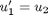
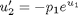
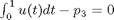
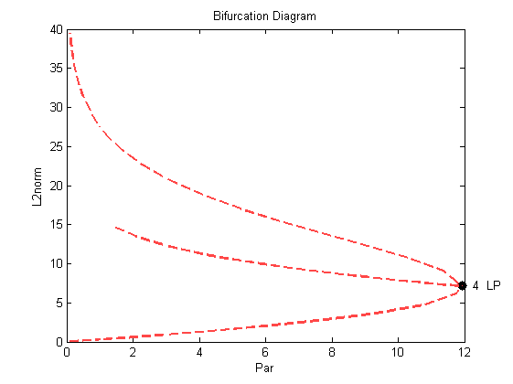

Boundary and Integral Constraints (Demo : int)
This demo illustrates the computation of a solution family to the equation
: ,
: ,
- with a non-separated boundary condition : $ u_1(0)-u_1(1)-p_2=0 $
- and an integral constraint : 
The solution family contains a fold, which, in the second run, is continued in two equation parameters.
Contents
- Initialise workspace
- Definition of function file
- Definition of boundary conditions file
- Definition of integral conditions file
- Set intial conditions
- Load and display constants
- Compute the solution family containing the fold
- Generate starting data for a curve of folds
- Compute a curve of folds; restart from second run
- Plot the solution
Initialise workspace
Clear workspace
clear all % Create a continuation object. a{1}=auto;
Definition of function file
Display function file contents.
type(a{1}.s.FuncFileName);
function [f,o,dfdu,dfdp]= func(par,u,ijac)
%
% equations file for demo int
%
f=[];
o=[];
dfdu=[];
dfdp=[];
e=exp(u(1));
f(1)=u(2);
f(2)=-par(1).*e;
if(ijac==0)
return
end
dfdu(1,1)=0.0;
dfdu(1,2)=1;
dfdu(2,1)=-par(1).*e;
dfdu(2,2)=0.0;
if(ijac==1)
return
end
% parameter derivatives
dfdp(1,1)=0.0;
dfdp(2,1)=-e;
Definition of boundary conditions file
Display boundary conditions file contents.
type(a{1}.s.BcndFileName);
function [fb,o,dbc]= bcnd(par,u0,u1,ijac)
%
% boundary conditions for demo int
%
fb=[];
o=[];
dbc=[];
fb(1)=u0(1)-u1(1)-par(2);
if(ijac==0)
return
end
dbc(1,1)=1.0;
dbc(1,2)=0.0;
dbc(1,3)=-1.0;
dbc(1,4)=0.0;
if(ijac==1)
return
end
% parameter derivatives
dbc(1,5)=0.0;
dbc(1,6)=-1.0;
dbc(1,7)=0.0;
Definition of integral conditions file
Display integral conditions file contents.
type(a{1}.s.IcndFileName);
function [fi,o,dint]= icnd(par,u,ijac)
%
%
%
fi=[];
o=[];
dint=[];
fi(1)=u(1)-par(3);
if(ijac==0)
return
end
dint(1,1)=1.0;
dint(1,2)=0.0;
if(ijac==1)
return
end
% parameter derivatives
dint(1,3)=0.0;
dint(1,4)=0.0;
dint(1,5)=-1.0;
Set intial conditions
We can either load data from the starting point file, or we can define the initial conditions directly into variable.
[a{1}.s.Par0,a{1}.s.U0,a{1}.s.Out0]=stpnt;
Load and display constants
Load the constants file.
a{1}.c=cint1(a{1}.c);
Display the constants.
a{1}.c
ans =
autoconstants handle
Properties:
Ndim: 2
Noutx: 0
Ips: 4
Irs: 0
Ilp: 1
Icp: 1
Ntst: 5
Ncol: 4
Iad: 3
Isp: 1
Isw: 1
Iplt: 0
Nbc: 1
Nint: 1
Nmx: 40
Rl0: 0
Rl1: 20
A0: 0
A1: 100
Npr: 40
Mxbf: 10
Iid: 2
Itmx: 8
Itnw: 5
Nwtn: 3
Jac: 1
Epsl: 1.0000e-006
Epsu: 1.0000e-006
Epss: 1.0000e-004
Ds: 0.0100
Dsmin: 1.0000e-003
Dsmax: 2
Iads: 1
Thl: [2 0]
Thu: []
Uzr: [2x2 double]
Compute the solution family containing the fold
Run equilbrium solutions.
a{1}=runauto(a{1});
--------------- DYNAMICAL SYSTEMS TOOLBOX ---------------------
USER NAME : ECOETZEE
DATE : 26/10/2010 10:10:15
<
BR PT TY LAB PAR(01) L2-NORM MAX U(01) MAX U(02)
1 1 EP 1 0.00000E+00 0.00000E+00 0.00000E+00 0.00000E+00
1 11 UZ 2 1.00004E+00 2.96262E-01 4.29222E-02 5.00382E-01
1 14 UZ 3 3.00000E+00 9.26129E-01 1.37743E-01 1.51077E+00
1 21 LP 4 1.19238E+01 7.16493E+00 1.29249E+00 9.14571E+00
1 30 UZ 5 3.00000E+00 2.09605E+01 4.42789E+00 2.28138E+01
1 34 UZ 6 1.00000E+00 2.75893E+01 6.04503E+00 2.93292E+01
1 40 EP 7 1.07610E-01 3.94554E+01 8.94942E+00 4.10120E+01
Total Time 0.391E+00
>
Generate starting data for a curve of folds
a{2}=a{1};
a{2}.c=cint2(a{2}.c);
a{2}=runauto(a{2});
--------------- DYNAMICAL SYSTEMS TOOLBOX ---------------------
USER NAME : ECOETZEE
DATE : 26/10/2010 10:10:16
<
Generating starting data :
Restart at EP label below :
BR PT TY LAB PAR(01) L2-NORM MAX U(01) MAX U(02) PAR(02)
2 5 EP 8 1.19238E+01 7.16487E+00 1.29012E+00 9.14566E+00 0.00000E+00
Total Time 0.188E+00
>
Compute a curve of folds; restart from second run
a{3}=a{2};
a{3}.c=cint3(a{3}.c);
a{3}=runauto(a{3});
--------------- DYNAMICAL SYSTEMS TOOLBOX ---------------------
USER NAME : ECOETZEE
DATE : 26/10/2010 10:10:16
<
BR PT TY LAB PAR(01) L2-NORM MAX U(01) MAX U(02) PAR(02)
2 38 UZ 9 3.00000E+00 1.23728E+01 3.49316E+00 1.27456E+01 7.90922E+00
2 40 EP 10 1.36979E+00 1.48682E+01 4.58514E+00 1.47518E+01 1.03924E+01
Total Time 0.233E+01
>
Plot the solution
Create plaut object and plot solution.
p=plautobj; set(p,'xLab','Par','yLab','L2norm'); ploteq(p,a);